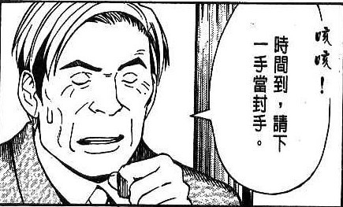
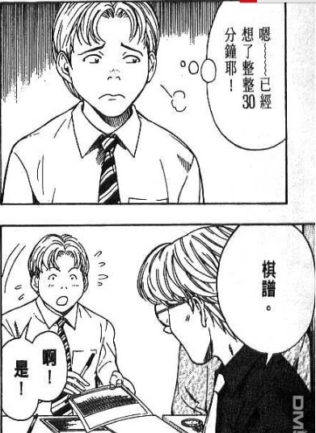
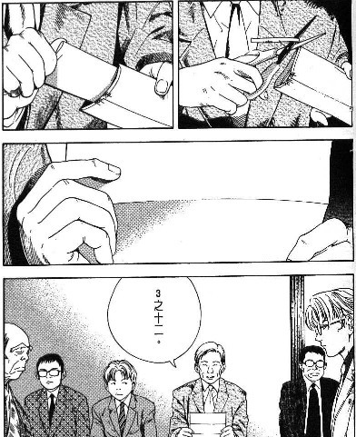

“封手”的演示过程。
#1 “封手”的演示过程。作者：踵酃 发表时间：2013-7-24 0:37:54
最近论坛赛加赛，屏蔽裁判长采用了“封手”一词，另一部分人感到迷惑。
现在就取缔“棋魂”漫画中关于封手的一段来演示啥是“封手”。
1. 决定要封手了， 就请一方决定下一手落子点。

2. 对手想了之后，就准备把下一手落子点写到棋谱上，只有自己知道，然后封印起来。

3. 重新开始对局后， 就把之前的信封打开，然后由裁判读出，之后就重新开始对局。

***以上就是封手的过程，为了避免对方利用休息的时间想下一手，这就是封手的意义***
#2 Re:“封手”的演示过程。作者：絕版賭徒 发表时间：2013-7-24 1:09:54
肯定不会是红字中的意义啊，如果担心对手利用休息的时间想下一手，那么自己有权在开赛时，或开赛后落子啊。。。。。。不过，让所有对局同时开赛，避免对局故意观望另几局优劣，而择良时段战术性开局倒有可能，
当然了，这些在慢棋中，都没什么意义。
就好比慢棋中经常看到拖时间，有些输了不投子，意义都不大，只是看谁输得起了，看谁不莫明其妙了，呵呵
#3 Re:“封手”的演示过程。作者：掌棋如烟 发表时间：2013-7-24 4:48:08
这个是围棋里用于中场休息吃个饭啥的，在此作用正是取同时开局之目的